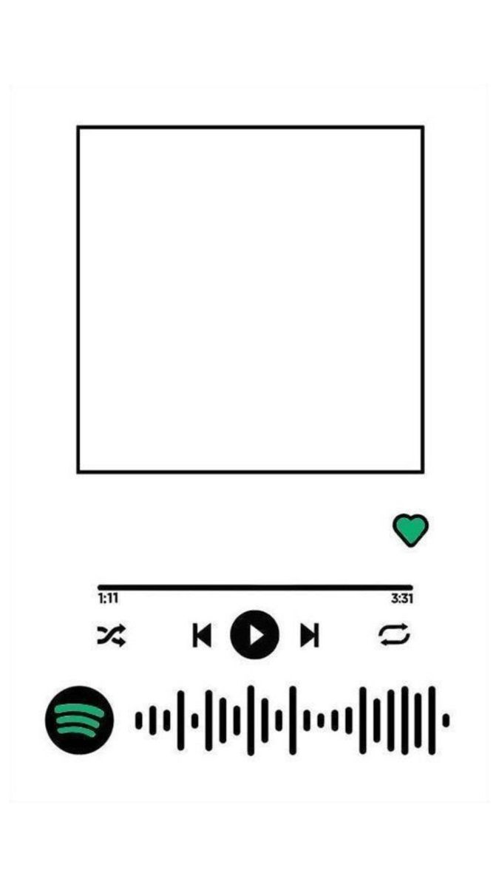
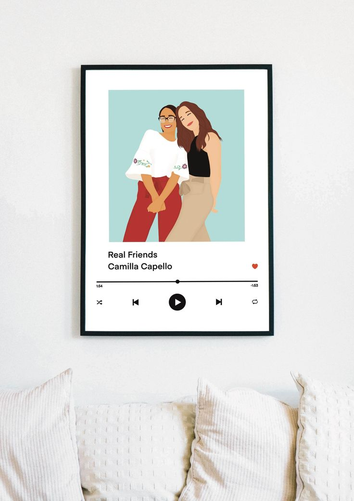
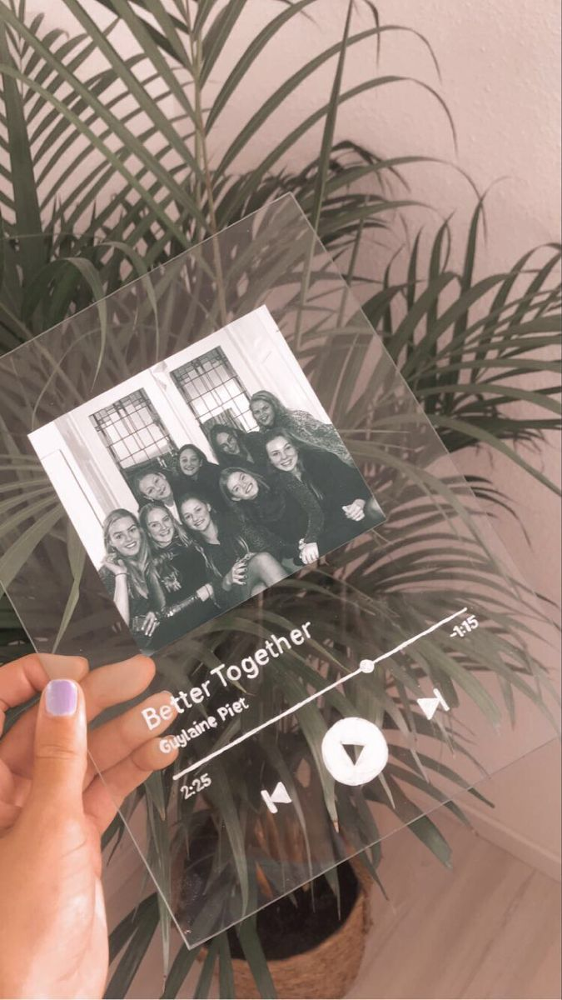
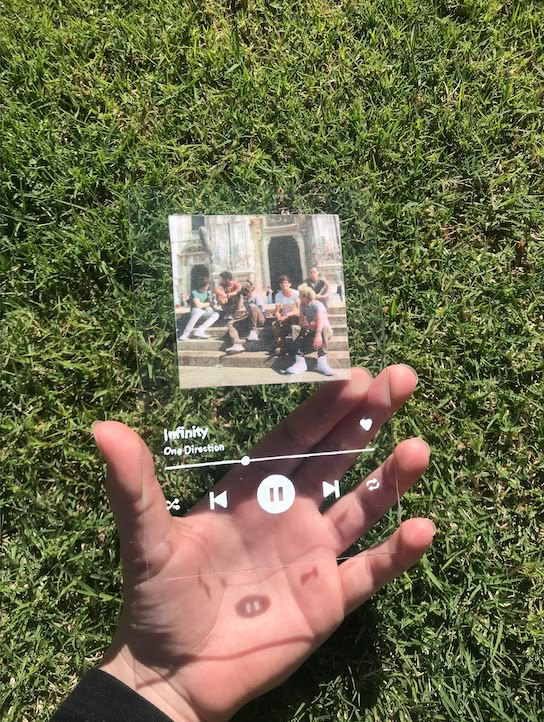
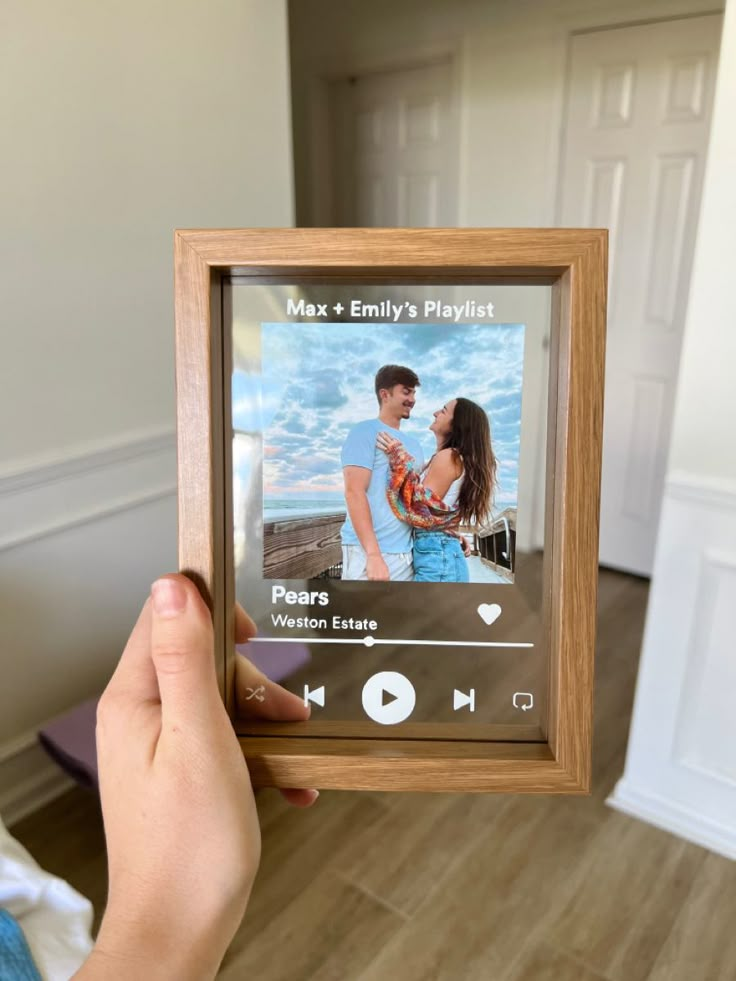

it's important to celebrate your people.
i spent some time making a dedicated spotify album cover for talya's birthday recently. she's my twin — not literally, obviously, but practically in every way that matters. when you find people who speak the same frequency as you without you having to explain the code, you hold onto them.
when i look at the circle i have around me right now — faith, sophie, ty, munnie, nella, divine, moyo, mutma — i realize how lucky i am to have landed where i did. abuja is a weird city; it can feel incredibly isolating if you don't have a baseline. but this group makes it feel steady.





the work is great, the applications are shipping, the youtube channel video essays are coming together nicely, but the people are the actual foundation of everything. when the servers go down and the screen goes black, these are the people sitting in the room with you.
there's a specific thing talya does where she just gets it. not everything needs to be explained. not everything needs context. you can walk in with something half-formed and she'll meet you where you are. that's rare. that's worth a spotify cover and more.
you have to celebrate them while they're here. you have to make the effort, design the covers, write the pieces, and show up for the dinners. because at the end of the day, the work matters but the people matter more.
← Back to Blog